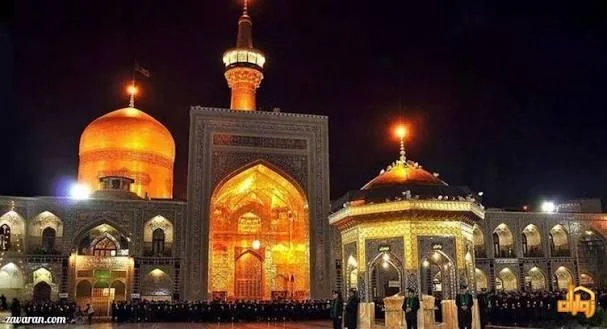

قبل هبوط الطائرة في مطار مشهد، يُرسل للزائر اسم السائق ونوع السيارة ونقطة اللقاء والأجرة الكاملة كتابةً عبر واتساب لتفادي أي مساومة عند الصالة.

مشهد المقدسة · إيران
السياحة والزيارة في مشهد…
مع حسين بثقة وأمان
أنا حسين، مرافقك المحلي للزيارة الدينية والسياحة العلاجية والإقامة قرب حرم الإمام الرضا.
احجز رحلتك الآنتواصل مباشر مع حسين
أسعار شفافة
دعم عربي ٢٤ ساعة

من نحن
حسين
مرحباً، أنا حسين، مؤسّس رحلتكم في مشهد. أهلي ونحن نساعد الزوار والمرضى منذ سنوات لتجربة روحانية وعلاجية مريحة وآمنة. رضاكم وسلامتكم أولويتنا.
تعرّف عليّ أكثر ←خدماتنا الرئيسية
كل ما تحتاجه لزيارة مريحة وآمنة إلى مشهد
دليل الزائر العربي
أدلة عملية لتبدأ من السؤال الذي يشغلك فعلاً
زيارة حرم الإمام الرضا
ما الذي ينبغي الاستعداد له قبل الزيارة؟
اقرأ الدليل ←أبواب حرم الإمام الرضا
خريطة المداخل والكراسي المتحركة لكل شارع
اقرأ الدليل ←فنادق مشهد قرب الحرم
مقارنة ٤ شوارع رئيسية قبل الحجز
اقرأ الدليل ←فندق قصر مشهد (رويال)
صور الغرف الملكية وأجنحة العرسان والأسعار الموسمية
تصفح الغرف ←مستشفيات مشهد والمراكز
دليل رضوي، خاتم الأنبياء، جواد الأئمة، والإخصاب
اقرأ الدليل ←سائق عربي ومترجم
استقبال المطار والجولات والمرافقة باللغة العربية
اقرأ الدليل ←زيارة مشهد من العراق
خطوات التخطيط قبل شراء التذاكر
اقرأ الدليل ←من مطار مشهد إلى الحرم
خطط للوصول والنقل قبل المغادرة
اقرأ الدليل ←تكلفة رحلة مشهد
حاسبة الميزانية وتقديرات المواسم قبل الحجز
احسب الآن ←السياحة العلاجية
ترتيب السفر والاستفسار الطبي والترجمة
اقرأ الدليل ←أفضل وقت لزيارة مشهد
اختر الموسم المناسب لبرنامجك وميزانيتك
اقرأ الدليل ←مشهد من الخليج
الكويت والبحرين وقطر والإمارات وعُمان
اقرأ الدليل ←مشهد من لبنان
خطوات التخطيط والوثائق للزائر اللبناني
اقرأ الدليل ←مشهد للعائلات
برنامج مريح يناسب الأسرة وكبار السن
اقرأ الدليل ←زعفران قائنات الأصلي
سوبر نغين وسركل وفحوصات النقاء بالمفرق والجملة
اقرأ الدليل ←زرشك قائنات (بوفكي)
توفير وتعبئة الزرشك الأصلي للبرياني والتجارة
اقرأ الدليل ←ممثل أمين وفحص الأملاك
فحص الشقق والسيارات والبضائع واستلام الحوالات عبر صرافة مرخصة
اقرأ الدليل ←المدونة — كل الأدلة
فهرس يضم ٧٩ دليلاً للزيارة والفنادق والأسواق والعلاج
تصفح المدونة ←كيف تنظم رحلتك إلى مشهد خطوة بخطوة؟
مسارات عملية تناسب الزائر القادم من العراق والخليج ولبنان
تختلف تفاصيل السفر إلى مشهد المقدسة بحسب نقطة الانطلاق، وعدد أفراد الأسرة، ووجود كبار السن أو مراجعة طبية. بدلاً من الاعتماد على عروض غير واضحة، يمكنك البدء بترتيب المحاور الأساسية التالية قبل تأكيد أي حجز:
- الوصول وأبواب وصحون الحرم: راجع شروط التأشيرة حسب الجنسية، والسفر البري من العراق أو الوصول من مطار مشهد، مع خريطة بوابات حرم الإمام الرضا وجولة الصحون والأروقة الداخلية.
- الفنادق، شهر العسل، والشباب: قارن الأسعار اليومية التقديرية في دليل الفنادق قرب الحرم، أو تصفح فندق قصر مشهد وفندق درويشي الملكي وفندق ألماس ١ و٢ والشقق المفروشة، مع أدلة مخصصة لـشهر العسل للأزواج والسفر الفردي والشبابي، مع إمكانية التفاوض غير المضمون أحياناً على خصم يصل إلى ٢٠٪ خارج الذروة وفق موافقة الفندق والتوفر.
- السياحة، المصايف، الأسواق، وهدايا قائنات: اكتشف المدن المائية المغلقة، ومصايف طرقبه وشانديز وجاغرق، ومنتزهات وكوهسنگي وكوهپارك، وأسواق إيثار للعبايات وشارع وحيد للشنط وفردوسي، وأشهر مطاعم الشيشليك ومعين درباري وبوظة دقت، إلى جانب أدلة شراء زعفران وزرشك قائنات.
- التنسيق العلاجي، الضوابط القانونية، والتمثيل الأمين: استعرض دليل المستشفيات وصفحات مستشفى رضوي وخاتم الأنبياء للعيون ومراكز أطفال الأنابيب (IVF)، أو راجع المرجع القانوني للأنظمة المدنية والزواج المؤقت في إيران (توعية قانونية فقط)، أو تعرّف إلى خدمة الممثل الأمين لفحص العقارات والسيارات والبضائع واستلام الحوالات عبر صرافة مرخصة.
لا تُفرض خدمات غير مطلوبة؛ كل ما ننسقه يُراجع ويُؤكد كتابياً قبل الدفع. تصفّح صفحة الخدمات أو دليل المال والدفع في إيران والإنترنت وشريحة الاتصال.
معايير الثقة والتوثيق الميداني
لا ننشر تقييمات أو نجوماً افتراضية؛ بل نوضح خطوات التحقق الميداني التي يعتمد عليها عملنا
قبل تثبيت الفندق أو الشقة المفروشة، يُراجع رقم الشارع وبوابة الحرم الأقرب وتوفر المصعد، مع عرض السعر الصافي اليومي وتوضيح أي خصم متغير متاح بموافقة الفندق إن وُجد.
في السياحة العلاجية، يُفصل حساب السكن والمترجم والسائق عن فاتورة المستشفى المباشرة عبر قسم المرضى الدوليين (IPD) دون عمولات مخفية.
الأسئلة الشائعة
كيف يتم تنسيق السفر إلى مشهد مع حسين؟
يبدأ التنسيق بإرسال موعد السفر التقريبي وعدد المسافرين وبلد المغادرة عبر واتساب، ثم توضيح خيارات الاستقبال والإقامة والتنقل والأسعار المتاحة كتابةً قبل أي التزام.
هل إرسال رسالة واتساب يعني حجزاً مؤكداً؟
لا، التواصل الأولي هو استفسار لتوضيح التوفر والأسعار والتفاصيل. لا يُعتبر أي حجز مؤكداً إلا بعد الاتفاق الكتابي وتأكيد الجهة المقدمة للخدمة.
هل تناسب الخدمة الزوار من العراق ودول الخليج ولبنان؟
نعم، التنسيق مخصص للزائر العربي القادم من العراق والكويت والبحرين وقطر والإمارات وعُمان والسعودية ولبنان، مع مراعاة احتياجات العائلات وكبار السن.
هل يشمل التنسيق المساعدة في السياحة العلاجية؟
يمكن المساعدة في الاستفسار الأولي والتنسيق اللوجستي للإقامة والتنقل عند المراجعة الطبية في مشهد، دون تقديم وعود علاجية أو ضمان نتائج طبية.
هل أنت مستعد لزيارتك؟
تواصل معنا الآن عبر واتساب ونرد عليك بسرعة ونرافقك خطوة بخطوة
تواصل معنا الآن عبر واتساب